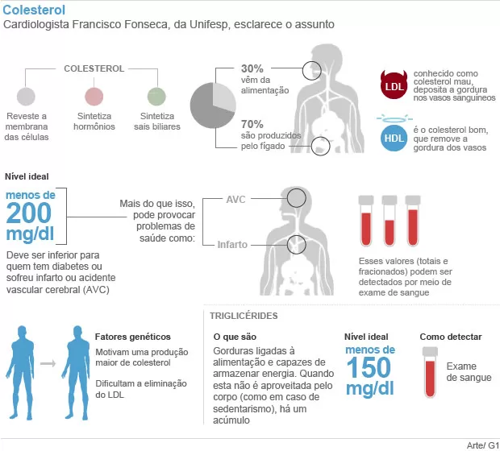

A Síndrome Metabólica (SM) é um conjunto de alterações metabólicas e hormonais caracterizada por
intolerância à glicose ( ou diabetes) , hipertensão arterial, dislipidemia e obesidade troncular ou
abdominal. O excesso de peso – caracterizado pelo acúmulo da gordura na circunferência abdominal- é
critério
essencial da síndrome, e uma vez combinado às demais comorbidades – todas relacionadas à resistência à
insulina- forma um complexo de fatores de risco que contribuem, de forma independente, para o
desenvolvimento de doença cardiovascular por aterosclerose. Aliás, a literatura médica tem mostrado de
forma
consistente que a presença do diagnóstico de SM, por si só, aumenta a mortalidade geral e cardiovascular
da
população estudada. Entre os critérios utilizados para diagnóstico
de SM, 2 principais são sugeridos na literatura internacional e são apresentados nas tabelas a seguir.
Critérios Diagnósticos para a Síndrome Metabólica segundo o NCEP- ATP III1 e a WHO2 Critério da ATP
III
Critério da ATP III1 Presença de 3 ou mais dos seguintes
1. Obesidade Abdominal: Cintura > 102 cm em homens e > 88 cm em mulheres2. Hipertrigliceridemia ≥ 150 mg/dl3. HDL Colesterol Baixo: < 40 mg/dl em homens e < 50 mg/dl em mulheres4. Pressão Arterial Elevada: ≥ 130/85 mmHg5. Glicemia de Jejum Elevada: ≥ 110 mg/dl
Colesterol / Dislipidemia

Colesterol / Dislipidemia
O diagnóstico da dislipidemia na Síndrome Metabólica é feito, laboratorialmente, medindo-se os níveis
plasmáticos de colesterol total e suas frações (LDL-colesterol, o HDL-colesterol e triglicérides).
Níveis de colesterol HDL maiores do que 50 mg/dL caracterizam um fator protetor. Já os níveis de
triglicérides maiores do que 150 mg/dL elevam o risco de doença aterosclerótica coronariana.
Os níveis de LDL-colesterol não pertencem aos critérios diagnósticos de SM. Para dislipidemia em geral,
entretanto, pessoas com níveis de colesterol total e LDL acima dos patamares da normalidade apresentam
maior risco de aterosclerose e doença cardiovascular. Os níveis desejáveis de LDL-colesterol devem ser
deerminados pelo médico, pois variam para cada paciente conforme seu histórico de doenças e fatores de
risco.
Referencias
1. Grundy SM, Cleeman JI, Daniels SR, Donato KA, Eckel RH, Franklin BA, et al. Diagnosis and
management of the metabolic syndrome: an American Heart Association/National Heart, Lung, and Blood
Institute Scientific Statement. Circulation. 2005;112:2735-52.2. Atualização da V Diretriz Brasileira de Dislipidemias e Prevenção da Aterosclerose.
Departamento de Aterosclerose da Sociedade Brasileira de Cardiologia. Apresentado no 71 Congresso
Brasileiro de Cardiologia. Fortaleza, 2016.
Hipertensão
HIPERTENSÃO ARTERIAL SISTÊMICA (HAS)
Existe uma clara associação entre obesidade e elevação dos níveis de pressão arterial. Vários estudos
epidemiológicos já haviam demonstrado a obesidade como um fator de risco independente para a HAS. Existe
uma correlação positiva entre a medida de cintura abdominal (ou relação cintura-quadril) e aumento dos
níveis de pressão arterial, tanto em homens quanto em mulheres. Os critérios diagnósticos para definição
de HAS incluem a elevação sustentada dos níveis de pressão arterial, acima de 140/90 mmHg, que
correspondem à pressão máxima ou sistólica e a mínima ou diastólica, respectivamente. O maior risco da
HAS, por corresponder a uma condição frequentemente assintomática, é a presença de complicações com
risco de lesões em órgãos-alvo, como coração, cérebro, rins e vasos.
Referência
1. Huang Z, Willett WC, Manson JE. Body weight, weight change, and risk for hypertension in women.
Ann Intern Med 1998;128(2):81-82. Garrison RJ, Kannel WB, Stokes J 3rd, Castelli WP. Incidence and precursors of hypertension in
young adults: the Framingham Offspring Study. Prev Med 1987;16:23-51.3. Hall JE, Brands MW, Dixon WN. Obesity-induced hypertension: renal function and systemic
hemodynamics. Hypertension 1995, 25: 994-1002.4. Barroso et al. Diretrizes Brasileiras de Hipertensão Arterial. Arq. Bras. Cardiol. 2021;
116(3): 516-658
Diabetes
Diabetes
O critério para o diagnóstico de diabetes mellitus universalmente utilizado é o da American Diabetes
Association (ADA), modificado em 1997 e, posteriormente, aceito pela Organização Mundial da Saúde
(OMS) e pela Sociedade Brasileira de Diabetes (SBD). As modificações foram realizadas com a finalidade
de prevenir de maneira eficaz as complicações crônicas do DM.
O jejum é definido como a falta de ingestão calórica por no mínimo 8 h. Glicemia plasmática casual é
aquela realizada a qualquer hora do dia, sem se observar o intervalo desde a última refeição.
Os sintomas clássicos do DM incluem poliúria, polidipsia e perda não explicada de peso.
Referências
1. American Diabetes Association. Diagnosis and classification of diabetes mellitus. Diabetes
Care. 2015; 38(Suppl):S8-S16.2. AmericanDiabetesAssociation.Guidetodiagnosisandclassifi- cation of diabetes mellitus and ofter
categories of glucose intoler- ance. Diabetes Care. 1997; 20(Suppl):215-25. 3. Bennet PH. Definition, diagnosis and classification of diabetes mellitus and impaired glucose
tolerance. In: Kahn CR, Weir GC, editors. Joslin’s Diabetes Mellitus. 13th ed. Philadelphia: Lea &
Febiger; 1994; p. 193-15. 4. Charles MA, Shipley MJ, Rose G et al. Risk factors for NIDDM in white population. Paris
Prospective Study. Diabetes. 1991; 40:796-9.5. Decode Study Group. Glucose tolerance and mortality: Com- parison of WHO and American Diabetes
Association diagnostic criteria. Lancet. 1999;354:617-21.